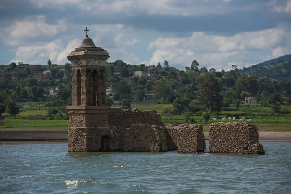
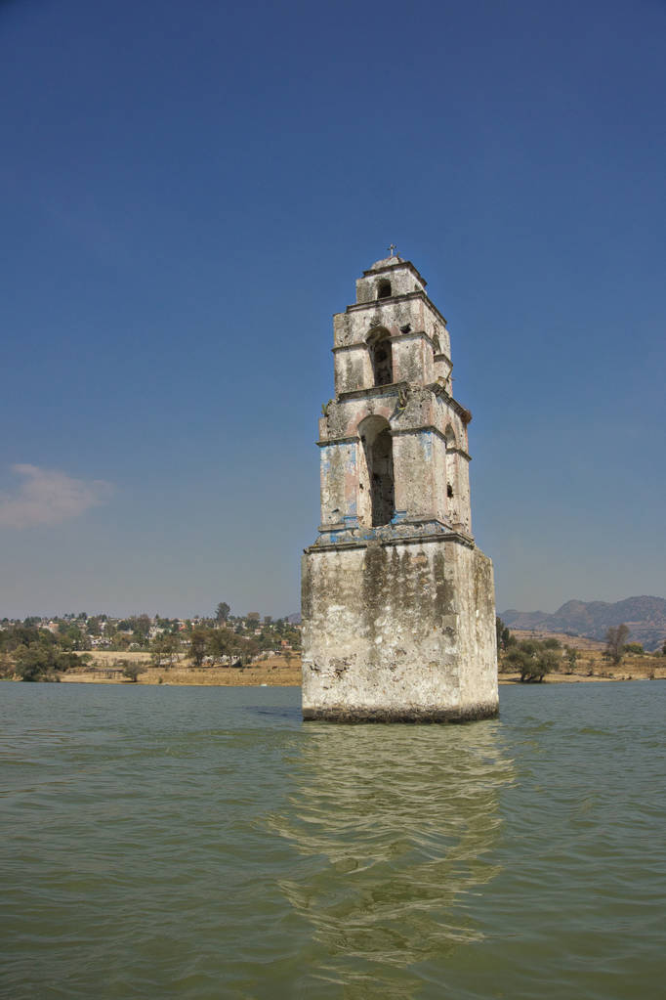
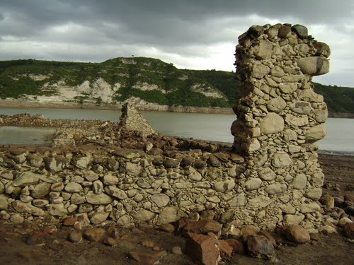
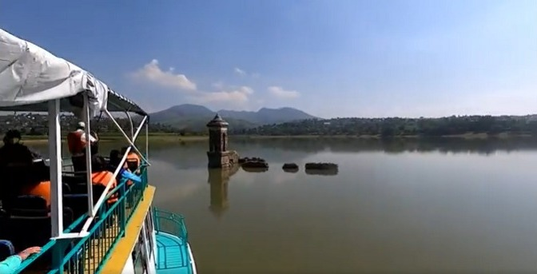
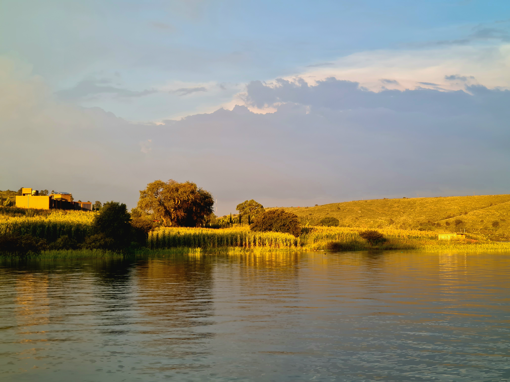
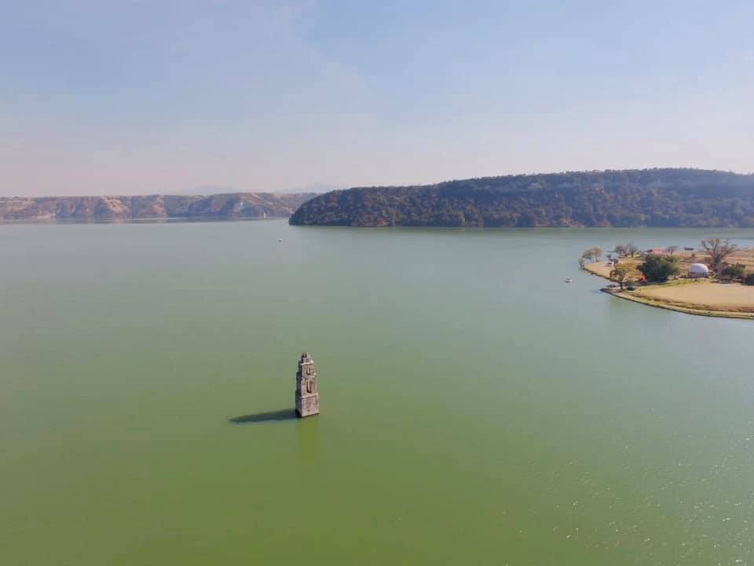

Dos cúpulas que se niegan a ser olvidadas bajo las aguas de la presa.

Hace casi un siglo, el valle resonaba con la vida de los agricultores de San Luis de las Peras. Sin embargo, un decreto presidencial lo cambió todo. Para abastecer de agua al estado de Hidalgo, se ordenó la construcción de la Presa Taxhimay.
Las familias empacaron sus vidas, dejando atrás sus fértiles huertos y su fe materializada en piedra. El agua subió, pero las iglesias se mantuvieron firmes.
Es la estructura más grande que asoma del agua. Su cúpula principal y parte de los muros laterales aún son visibles. Cuando hay sequía, puedes caminar por la nave central donde alguna vez se celebraron misas.
La torre más delgada y pequeña. Recibe su nombre de una antigua imagen de Cristo venerada en el pueblo. Su diseño espigado la hace resaltar dramáticamente cuando la presa está a su máxima capacidad.
Historias que los lancheros susurran al caer el sol...
"Cuentan los pescadores más viejos que, en las madrugadas más frías, cuando la neblina espesa cubre la presa, aún se puede escuchar el eco lejano de las campanas de la parroquia llamando a misa desde el fondo del agua."
"La torre pequeña lleva el nombre de Cristo del Quejido porque la leyenda afirma que, el día que el agua comenzó a tragar el pueblo, la antigua figura de madera del Cristo emitió un profundo lamento que hizo eco en todo el valle al sentir que su hogar se hundía."
"Se rumora que, por la prisa de la evacuación en 1934, los cálices de oro y las joyas de los santos nunca salieron del pueblo. Algunos buzos han intentado bajar a buscarlos, pero aseguran que misteriosos remolinos oscurecen el agua justo cuando intentan entrar a la nave central."
"En las noches de luna llena, cuando el reflejo ilumina el agua, los habitantes de la orilla aseguran ver la silueta de un hombre vestido de manta caminando sobre la cúpula principal. Dicen que es el antiguo sacristán, que se negó a abandonar su iglesia."




